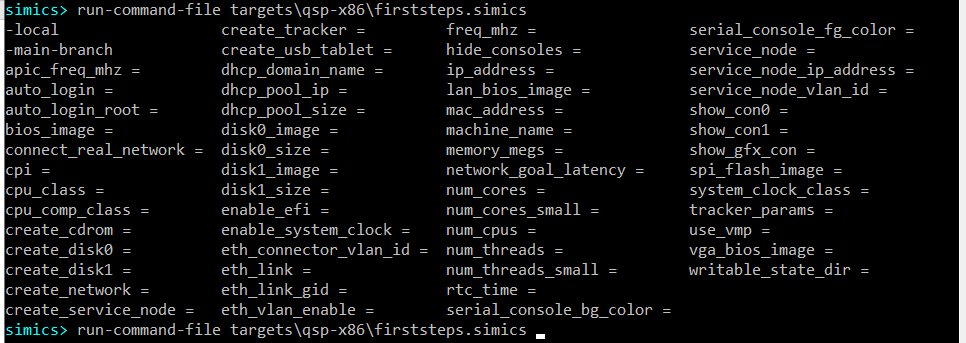
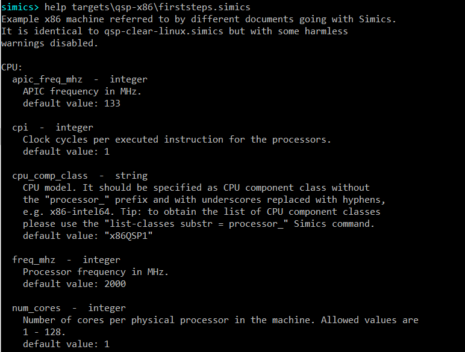

This section describes a legacy method creating configurations by using Intel Simics scripts, referred to as scripts in this section for brevity.
Modern configurations are created with targets and are customized using target parameters, but since all models have not been converted, it may be good to know how scripts are used.
To distinguish between legacy scripts and modern targets:
list-targets commandtargets/*/*.target.yml filesload-target commandlist-targets commandtargets/*/*.simics files which
contain decl list of parameters.run-command-file command.The following tasks are explained:
Intel Simics scripts can accept parameters. There are a few ways to discover which parameters, if any, are accepted by the script:
To discover available parameters via command line completion, press the tab key twice after entering the string: run-command-file targets\qsp-x86\firststeps.simics
simics> run-script targets\qsp-x86\firststeps.simics <TAB><TAB>
As a result, command line completion should show available parameters for the script:

The help command also allows finding out which parameters are accepted by a script as well as to see documentation for the parameters. To discover available parameters for the targets\qsp-x86\firststeps.simics script just run this command:
simics> help targets\qsp-x86\firststeps.simics
As a result, script description will be printed together with a long list of accepted parameters. Here is the beginning of the output:

Let’s create a target machine with 4 cores per physical processor by setting the num_cores parameter to 4. To do that please run the following command:
simics> run-script targets\qsp-x86\firststeps.simics num_cores = 4
To verify that the target indeed has 4 cores, run the list-processors command:
simics> list-processors
┌────────────────────────┬─┬─────────┬────────┐
│ CPU Name │ │CPU Class│ Freq │
├────────────────────────┼─┼─────────┼────────┤
│board.mb.cpu0.core[0][0]│*│x86QSP1 │2.00 GHz│
│board.mb.cpu0.core[1][0]│ │x86QSP1 │2.00 GHz│
│board.mb.cpu0.core[2][0]│ │x86QSP1 │2.00 GHz│
│board.mb.cpu0.core[3][0]│ │x86QSP1 │2.00 GHz│
└────────────────────────┴─┴─────────┴────────┘